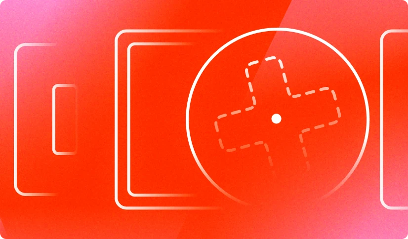

II часть · 5 глава
Интерактив с JavaScript
Добавляем мощный слой интерактива в проект. От обработки кликов и генерации случайных композиций до непрерывного взаимодействия с курсором.

Кодинг · 8 минут
Добавление интерактивных элементов
Как отслеживать действия пользователя и менять страницу в ответ
Кодинг · 8 минут
Случайность и генеративность
Сучайные позиции, цвета, выбор элементов. Простой способ сделать плакат случайным живым

Кодинг · 7 минут
Динамический курсор
Добавляем обычному курсору крутых процедурных эффектов с помощью отслуживания его координат